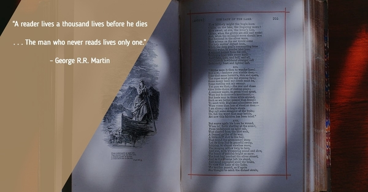

Welcome to Project: Read
In this site you will find the following:
- Some of my favorite books to read and why.
- A few books that I intend on reading, if I ever have the time again.
- .... and a little information about me sprinkled all over
Reading became very important to me when I was young and has remained a favorite pass time as I got older. Regardless if it was being snowed in Michigan where I grew up or being deployed to Iraq a book has quite honestly helped me keep my sanity in some tough environments
You will find that I greatly enjoy the Fantasy, Science Fiction, and Adventure Genres with a little Horror/Supernatural thrown in. I hope that you find a book that is or was an old friend and some more that are new and exciting.
Adventure Awaits!!